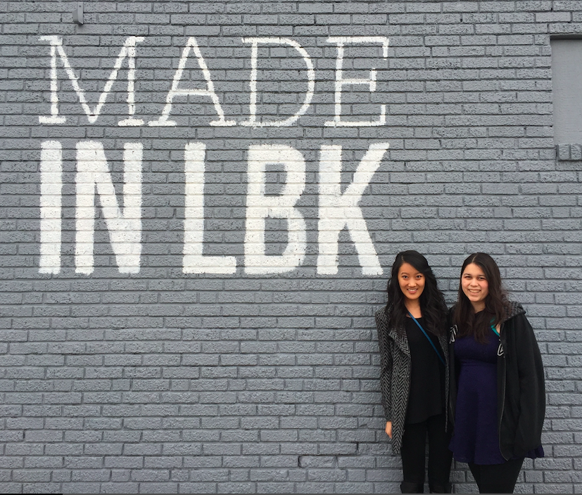
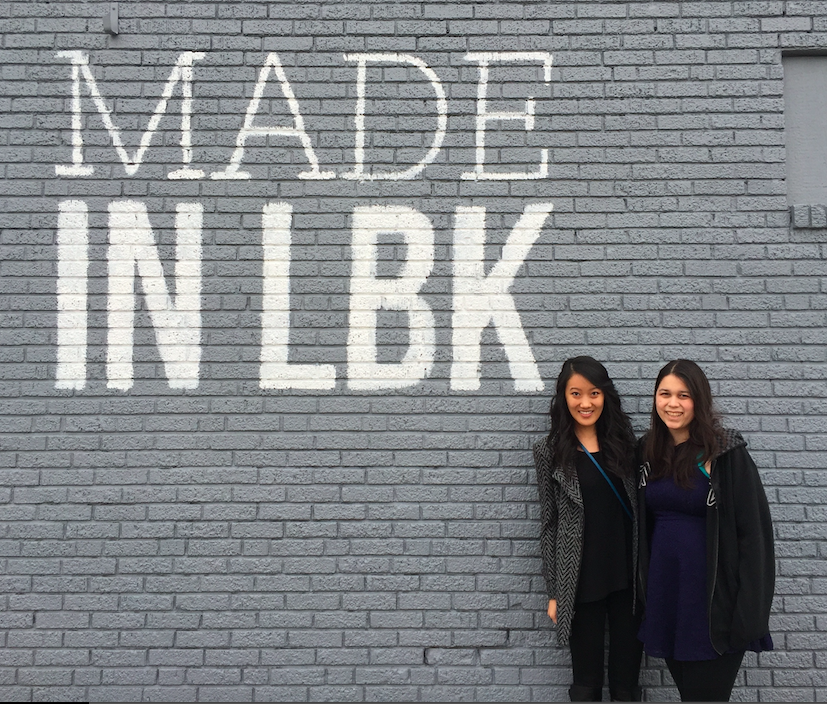

Hi. I am Julia, an engineer who wants to chase challenges and solve problems. I love learning about different technologies and combining them to create impactful devices and products. I am passionate about work that can empower others and connect me to my community.
I am currently a senior at Rice University studying Bioengineering with an interest in Computer Science and Electrical Engineering. I grew up in Lubbock, Texas and some of my hobbies include eating lots of food, reading bestselling non-fiction books, playing with circuits and singing classical pieces.
Aprenda Systems | Software Intern
August 2016 - Present | Technical Team | Houston, Texas
Collaborating with a team to improve platform by using CakePHP to add features to optimize the data sharing process.
General Electric Healthcare | Software Intern
June 2016 - August 2016 | UV Performance Team | Barrington, Illinois
Worked with Centricity Universal Viewer Controller team to improve application performance by implementing database caching and multithreading operations. Reduced image loading time and conducted performance testing. Built proofs of concept -- an image fetching servlet and a search engine for product troubleshooting improvement.
NSF REU at Texas Tech University | Research Intern
May 2016 - August 2016 | Healthcare Solutions Team | Lubbock, Texas
Designed an Answer Set Prolog computer program that accurately recommends treatments derived from clinical practice guidelines for various co-morbid diseases. The program takes in illnesses and outputs treatment plans that have eliminated inconsistencies and overlapping information. Explored declarative programming, specifically ASP, as a tool to solve real world problems.
Pediatric Cardiac Engineering Lab at Texas Children's Hospital | Research Assistant
August 2014 - May 2016 | Cardiac Patch Solutions | Houston, Texas
Led a project investigating the applicability of polyurethane as part of a hybrid cardiac patch for the creation of an autologous and contractile tissue engineered device for congenital heart defects. Assessed the viability of stem cells in hybrid patch to attain a pre-vascularized patch.
Fluid Flow Lung Model
Fall 2014 | Computation Model | MATLAB
A physiologically accurate, computational model of the lungs that can determine the gaseous compositions of total lung capacity and arterial blood. Models air mixing, humidifying, and diffusion into blood stream by utilizing fluid flow and mixing principles.
Optical Immunoassay Technical ReportModel Code
GE Emerging Technologies Project
Summer 2016 | Web Application | HTML + CSS + jQuery
Created a web application that verifies server and website availability of websites to help employees better troubleshoot their problems. Managed website deployment onto server.
Application Code
Electromyograph
Fall 2015 | Medical Device | LabVIEW + Analog Circuitry
An accurate and low-cost device that detects and processes muscle contractions as well as translates analog signals into relevant medical data. Comprised of hardware that filters and amplifies the muscle signal and software that performs peak detection and time calculation in order to extract reflex times.
Electromyograph Technical Report
Optical Immunoassay System
Fall 2015 | Medical Device | LabVIEW + Analog Circuitry
An investigative system that that can precisely and accurately test whole blood for particular analytes through the analysis of light diffraction by nanoshells. Hardware was implemented to process the signal recieved from photosensor and software was used to translate signals into concentrations.
Optical Immunoassay Technical Report
Pulse Oximeter
Spring 2015 | Medical Device | LabVIEW + Analog Circuitry
A cost-effective and accurate medical device that that detects for oxygen saturation and pulse. Incorporates signal processing hardware and software that performs peak detection and de-multiplexing to translate electronic information into oxygen saturation and pulse.
Pulse Oximeter Technical ReportPulse Oximeter Block Diagram
Bronchial Stent
Fall 2014 | Design Proposal | Auto-CAD
An implantable, low-maintenance and user-friendly device that utilizes resistive pressure sensors to detect for bronchial constriction. Device can provide early detection of asthma attacks.
Bronchial Stent Technical Report
SynerGE Innovation Challenge
Summer 2016 | Customer Experience Proposal
Collaborated with a team to propose an artificial intelligence system that can improve customer experience to the Chief Marketing Officer of GE. Voted most innovative of the intern pitches.
 
